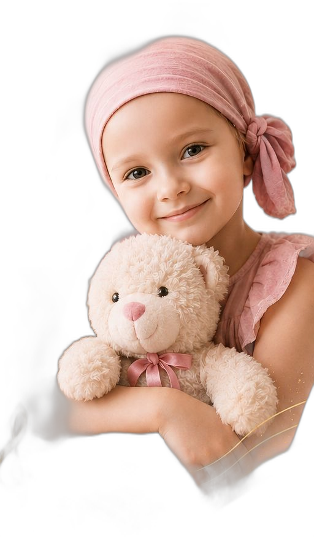

<!DOCTYPE html>
<html lang="pl">
<head>
<meta charset="utf-8">
<meta name="viewport" content="width=device-width, initial-scale=1">
<title>doTERRA Bē Convention 2026 Katowice — nagrania konwencji</title>
<meta name="description" content="Spodek Arena · maj 2026. Wszystkie sesje, wystąpienia, transkrypcje (PL/EN) i notatki z doTERRA Bē Convention 2026 Katowice.">
<link rel="icon" type="image/svg+xml" href="data:image/svg+xml;utf8,<svg xmlns=%22http://www.w3.org/2000/svg%22 viewBox=%220 0 100 100%22><defs><linearGradient id=%22g%22 x1=%220%22 y1=%220%22 x2=%221%22 y2=%221%22><stop offset=%220%%22 stop-color=%22%231870B9%22/><stop offset=%22100%%22 stop-color=%22%23125a96%22/></linearGradient></defs><rect width=%22100%22 height=%22100%22 rx=%2222%22 fill=%22url(%23g)%22/><text x=%2250%22 y=%2262%22 font-size=%2248%22 font-weight=%22700%22 text-anchor=%22middle%22 font-family=%22system-ui,sans-serif%22 fill=%22white%22>Bē</text></svg>">
<link rel="preconnect" href="https://fonts.googleapis.com">
<link rel="preconnect" href="https://fonts.gstatic.com" crossorigin>
<link href="https://fonts.googleapis.com/css2?family=Inter:wght@400;500;600;700;800;900&display=swap" rel="stylesheet">
<style>
  *, *::before, *::after { box-sizing:border-box; margin:0; padding:0; }
  html, body { background:#FAFAF8; }
  body { font-family:'Inter',-apple-system,BlinkMacSystemFont,system-ui,sans-serif; -webkit-font-smoothing:antialiased; color:#15171C; line-height:1.55; }
  ::selection { background:#15171C; color:#fff; }
  button { font:inherit; cursor:pointer; }
  a { color:inherit; }
  @keyframes bcDim { from { opacity:0; transform:translateY(6px); } to { opacity:1; transform:none; } }
  .bc-fade { animation:bcDim .28s ease both; }

  .bc-card { transition:transform .18s ease, box-shadow .18s ease, border-color .18s ease; }
  .bc-card:hover { box-shadow:0 26px 46px -30px rgba(20,20,25,.5); transform:translateY(-2px); border-color:#DCDCD3; }
  .bc-back { transition:color .13s; }
  .bc-back:hover { color:#15171C !important; }
  .bc-pllink:hover { text-decoration:underline; }
  .bc-sesspl:hover { border-color:#1870B9 !important; background:#EFF5FB !important; }

  /* notatki (render z markdown) */
  .nt h2 { font-size:1.18rem; font-weight:800; letter-spacing:-.02em; line-height:1.2; margin:26px 0 6px; color:#15171C; }
  .nt h3 { font-size:1.02rem; font-weight:700; letter-spacing:-.01em; margin:22px 0 4px; color:#15171C; }
  .nt h4 { font-size:.92rem; font-weight:700; margin:16px 0 2px; color:#3A3D44; }
  .nt p  { font-size:1rem; color:#2C2E34; line-height:1.7; margin:10px 0; }
  .nt ul, .nt ol { margin:8px 0 8px 4px; padding-left:22px; }
  .nt li { font-size:1rem; color:#2C2E34; line-height:1.62; margin:7px 0; }
  .nt strong { color:#15171C; font-weight:700; }
  .nt .nt-meta { font-size:.86rem; color:#6B7280; line-height:1.6; background:#fff; border:1px solid #ECECE6; border-radius:10px; padding:13px 15px; margin:10px 0 4px; }

  /* ── Baner charytatywny (zbiórka dla Zoe) ── */
  .zoe-banner { display:block; position:relative; overflow:hidden; background:linear-gradient(135deg,#fdeef0 0%,#f6dbe0 100%); border:1px solid #f0c9d1; border-radius:18px; padding:24px 220px 24px 26px; margin:0 0 30px; text-decoration:none; min-height:158px; transition:box-shadow .18s, transform .18s; }
  .zoe-banner:hover { box-shadow:0 12px 34px rgba(190,70,100,.18); transform:translateY(-2px); }
  .zoe-tag { display:inline-block; background:#d35a77; color:#fff; font-size:11px; font-weight:700; letter-spacing:.4px; padding:3px 11px; border-radius:999px; margin-bottom:10px; }
  .zoe-text h2 { color:#6e2b3e; font-size:25px; line-height:1.15; margin:0 0 6px; font-weight:800; }
  .zoe-text p { color:#8a4a5b; font-size:14px; line-height:1.5; margin:0 0 14px; }
  .zoe-text .heart-name { color:#d35a77; font-weight:700; }
  .zoe-cta { display:inline-flex; align-items:center; gap:7px; background:#d35a77; color:#fff; font-weight:600; font-size:14px; padding:10px 18px; border-radius:9px; transition:background .15s; }
  .zoe-banner:hover .zoe-cta { background:#bd4865; }
  .zoe-banner picture { display:contents; }
  .zoe-girl { position:absolute; right:18px; bottom:0; height:186px; width:auto; pointer-events:none; }
  @media (max-width:600px) {
    .zoe-banner { padding:16px 116px 16px 16px; border-radius:14px; min-height:138px; }
    .zoe-text h2 { font-size:19px; }
    .zoe-text p { font-size:12.5px; margin-bottom:12px; }
    .zoe-cta { font-size:12.5px; padding:9px 13px; }
    .zoe-girl { right:6px; height:140px; }
  }
  @media (max-width:380px) {
    .zoe-banner { padding-right:100px; }
    .zoe-girl { height:122px; }
  }
</style>
</head>
<body>
<div id="app" style="min-height:100vh;background:#FAFAF8;"></div>

<script>
(function () {
  "use strict";

  var FULL = 'https://www.youtube.com/playlist?list=PL2CEwcCp6FQbauNNi_bFPFyt7OssgpaYN';
  var URLS = [
    'https://www.youtube.com/playlist?list=PL2CEwcCp6FQa5JQ8RpkCus-w7HqSP---m',
    'https://www.youtube.com/playlist?list=PL2CEwcCp6FQaokWGX162KjEXaRC4F9lNl',
    'https://www.youtube.com/playlist?list=PL2CEwcCp6FQaN75P3ZBR6HX7MzjS-rddp',
    'https://www.youtube.com/playlist?list=PL2CEwcCp6FQaQ6bsg1R1MR-c6VzuUN8nx'
  ];

  var SESS = [
    {
      num: '01', eyebrow: 'Empowerment Day', title: 'Empowerment Day · Sesja 1',
      location: 'Spodek Arena', date: '28 maja 2026', time: '10:00–12:45', count: '5',
      meta: '28 maja 2026 · 10:00–12:45 · 5 wystąpień',
      speakers: 'Michele Farace · Dani Lauer · Melina Ilia-Philmon · Panel (Oliver Zabania) · Tammy Marti',
      talks: [
        { n: '01', name: 'Michele Farace', topic: '„Nie pracuj na cudze marzenie"', dur: '22:08', dir: '01 - Michele Farace nie pracuj na cudze marzenie', desc: 'Software Engineer (43, Włoch; 12 lat w innym MLM + 2 lata doTERRA) o ucieczce z korpo i regule 10 rozmów dziennie. Najmocniej operacyjne — konkrety, jak skalować.' },
        { n: '02', name: 'Dani Lauer', topic: '„Stop overthinking, fix the leak"', dur: '18:13', dir: '02 - Dani Lauer stop overthinking', desc: 'Blue Diamond o pewności siebie, syndromie oszusta i „superhero pose". Najmocniej psychologiczne — narzędzia mentalne na confidence.' },
        { n: '03', name: 'Melina Ilia-Philmon', topic: 'LRP i ścieżka do 500', dur: '17:56', dir: '03 - Melina Ilia-Philmon LRP i sciezka do 500', desc: 'Blue Diamond (architekt, Grecja, 10 lat) o konkretnym planie zarobkowym miesiąc po miesiącu w nowym planie kompensacyjnym. Najmocniej finansowe — konkretne liczby PV i euro.' },
        { n: '04', name: 'Panel — rekrutacja przez połączenie', topic: 'Oliver Zabania + 4 liderki', dur: '27:30', dir: '04 - Panel rekrutacja przez polaczenie', desc: 'Moderator Oliver Zabania (Regional Director Europe East) + Alina & Manuel Gedliz, Susan Naber, Dominica Punova, Maria Castia. Rekrutacja bez przekonywania. Najszersze — 5 głosów wokół jednego tematu.' },
        { n: '05', name: 'Tammy Marti', topic: '„Stop chasing, create spaces"', dur: '24:30', dir: '05 - Tammy Marti stop chasing create spaces', desc: 'Presidential Diamond (founderka doTERRA Switzerland) o 4 zasadach flow i klasach w domach klientek. Najmocniej strategiczne — przemyślenie całej filozofii recruiting/teaching.' }
      ]
    },
    {
      num: '02', eyebrow: 'Empowerment Day', title: 'Empowerment Day · Sesja 2',
      location: 'Spodek Arena', date: '28 maja 2026', time: '14:45–17:00', count: '7',
      meta: '28 maja 2026 · 14:45–17:00 · 7 wystąpień',
      speakers: 'Eniko Gecsenyi · Helena Olearska · Kristin Schindhelm · Russell Buttars · Patrycja Dębska · Panel (Mika Paciorek + Nowosielskie) · Jessica Moultrie',
      talks: [
        { n: '01', name: 'Eniko Gecsenyi', topic: 'Typy osobowości', dur: '19:30', dir: 'Sesja 2/01 - Eniko Gecsenyi typy osobowosci', desc: 'Diamond (Węgry, 7 lat w doTERRA; wcześniej trenerka komunikacji liderów na uniwersytecie) o systemie DISC — czterech kolorach osobowości w sprzedaży i mentoringu. Najmocniej narzędziowe — gotowy framework, jak rozpoznać typ klienta i dostosować styl rozmowy.' },
        { n: '02', name: 'Helena Olearska', topic: 'Personal brand', dur: '15:42', dir: 'Sesja 2/02 - Helena Olearska personal brand', desc: 'Diamond (Polska) o personal brandzie i wideo jako narzędziu pracującym 24/7. Najmocniej operacyjne — konkretne skrypty, okno follow-upu 24-48h i rozróżnienie „nie" od „nie teraz".' },
        { n: '03', name: 'Kristin Schindhelm', topic: 'Poza plateau', dur: '22:47', dir: 'Sesja 2/03 - Kristin Schindhelm poza plateau', desc: 'Diamond (Niemcy, od 2020) o plateau jako fazie korzenienia się, nie utknięcia. Najmocniej psychologiczne — reframe mindsetu, presence ponad performance i przejście przez stagnację.' },
        { n: '04', name: 'Russell Buttars', topic: 'Leadership growth', dur: '10:59', dir: 'Sesja 2/04 - Russell Buttars leadership growth', desc: 'VP Global Strategy & India z doTERRA Corporate (10 lat) o leadershipie metaforą „bądź traktorem" i regule „pick 3 things". Najmocniej strategiczne — spojrzenie korpo, benchmark Rumunia/Indie i fokus zamiast chaosu.' },
        { n: '05', name: 'Patrycja Dębska', topic: 'Presence & identity', dur: '21:10', dir: 'Sesja 2/05 - Patrycja Debska presence identity', desc: 'Blue Diamond (Polska) o modelu inner leadership — 5 filarów: Presence, Identity, Power, Execution, Service. Najmocniej tożsamościowe — najpierw budujesz siebie, regule 2% i „simple but not easy".' },
        { n: '06', name: 'Panel — Mika Paciorek + Nowosielskie', topic: 'Duplikacja', dur: '14:40', dir: 'Sesja 2/06 - Panel Mika Paciorek Nowosielskie duplikacja', desc: 'Panel: founderka Blue Diamond (Polska, 9 lat) + architektka i organizatorka eventów o budowaniu od zera i duplikacji. Najmocniej inspiracyjne — historia polskiego trzonu, „nie byłam sama" i odwaga, by zacząć niedoskonale.' },
        { n: '07', name: 'Jessica Moultrie', topic: 'Silne systemy', dur: '14:39', dir: 'Sesja 2/07 - Jessica Moultrie silne systemy', desc: 'President doTERRA North America (15 lat w polu, dziś corporate) o tym, dlaczego model w ogóle działa, na przykładzie córki-sportsmenki. Najmocniej wizjonerskie — meta-spojrzenie: systemy rozszerzające potencjał i Europa jako wczesna przewaga.' }
      ]
    },
    {
      num: '03', eyebrow: 'General Session', title: 'General Session · piątek',
      location: 'Spodek Arena', date: '29 maja 2026', time: '09:30–12:30', count: '10',
      meta: '29 maja 2026 · 09:30–12:30 · 10 wystąpień',
      speakers: 'David Stirling · Mihaela Oprea · Michael Schluchter · Russell Osguthorpe · Scott Johnson · Abby Stopher · Olga Mazur · Alexandra Nitsche · Angela Kersten',
      talks: [
        { n: '01', name: 'David Stirling', topic: 'Otwarcie i legacy', role: 'Founding Executive & CEO', dur: '29:29', dir: 'General Session/01 - David Stirling otwarcie i legacy', desc: 'Founding Executive & CEO o 18 latach doTERRA, narodzinach firmy w recesji 2008 i modelu Cō-Impact Sourcing. Najmocniej wizyjne — sens „firmy konsekrowanej", legacy i natural intelligence kontra AI.' },
        { n: '02', name: 'Mihaela Oprea', topic: 'Otwarcie + zbiórka Feminoteca', role: 'MD of Leadership Experience', dur: '10:52', dir: 'General Session/02 - Mihaela Oprea otwarcie i zbiorka Feminoteca', desc: 'MD of Leadership Experience otwiera sesję (ok. 6 000 osób) misją „We help the world heal" i zbiórką na Feminoteca (cel 30 000 €). Najmocniej charytatywne — Healing Hands i realny ślad konwencji w Katowicach.' },
        { n: '03', name: 'Michael Schluchter', topic: 'Corporate i liderzy', role: 'MD of Business Operations', dur: '10:50', dir: 'General Session/03 - Michael Schluchter corporate i liderzy', desc: 'MD of Business Operations o partnerstwie corporate–liderzy (corporate daje badania i strukturę, liderzy serce). Najmocniej wspólnotowe — przywództwo dla wpływu, nie dla aplauzu, i cztery historie zwykłych liderek.' },
        { n: '04', name: 'Dr Russell Osguthorpe', topic: 'Wprowadzenie medyczne', role: 'Chief Medical Officer', dur: '05:45', dir: 'General Session/04 - Russell Osguthorpe wprowadzenie medyczne', desc: 'Chief Medical Officer wprowadza blok medyczno-produktowy i zapowiada ekspertów (dr Johnson, dr Nitsche) oraz 2 premiery tylko dla Europy. Najkrótsze i pomostowe — sygnał, że Europa dostaje wyjątkowo dużo lekarzy.' },
        { n: '05', name: 'Dr Scott Johnson', topic: 'RevitaZen — detoks', role: 'Director, Research Substantiation', dur: '13:07', dir: 'General Session/05 - Scott Johnson RevitaZen detoks', desc: 'Director of Research Substantiation o RevitaZen — następcy Zendocrine (olejek + kapsułki „kapsułka w kapsułce", ostropest, czarnuszka). Najmocniej produktowo-naukowe — detoks jako codzienne wsparcie wątroby oparte na badaniach, nie ekstrema.' },
        { n: '06', name: 'Abby Stopher', topic: 'Olej rycynowy (castor oil)', role: 'Product Marketing Manager', dur: '08:23', dir: 'General Session/06 - Abby Stopher olej rycynowy', desc: 'Product Marketing Manager o oleju rycynowym (castor oil) — tradycji od starożytnego Egiptu w standardzie CPTG, sourcing z Gujaratu. Najmocniej topikalne — proste wsparcie skóry „od zewnątrz" i rytuał codzienności.' },
        { n: '07', name: 'Olga Mazur', topic: 'doTERRA Fiber', role: 'Senior Product Manager EMEA', dur: '14:49', dir: 'General Session/07 - Olga Mazur doTERRA Fiber', desc: 'Senior Product Manager EMEA o doTERRA Fiber — błonniku formułowanym pod Europę (smak cytryna-jabłko, ponad 2 lata testów ze społecznością). Najmocniej rynkowo-europejskie — produkt z Francji szyty na lukę błonnikową i gust Europejczyków.' },
        { n: '08', name: 'Alexandra Nitsche', topic: 'Błonnik i trawienie', role: 'MD, Representative of SMEC Europe', dur: '27:21', dir: 'General Session/08 - Alexandra Nitsche blonnik i trawienie', desc: 'MD (przedstawicielka SMEC Europe) o fizjologii błonnika — mikrobiocie, osi jelito-mózg, hormonach i cukrze, z demonstracją na żywo (hala jako ciało). Najmocniej naukowo-edukacyjne — najgłębszy wykład fizjologiczny całej sesji.' },
        { n: '09', name: 'Dr Scott Johnson', topic: 'OnGuard + Echinacea', role: 'Director, Research Substantiation', dur: '18:43', dir: 'General Session/09 - Scott Johnson OnGuard Echinacea', desc: 'Director of Research Substantiation o premierze olejku z Echinacei (destylacja w Bułgarii) i OnGuard Stick + Echinacea. Najmocniej chemiczne — seskwiterpeny, receptory CB2 i reguła wchłaniania „4-10-75".' },
        { n: '10', name: 'Angela Kersten', topic: 'Sprzedaż Convention Kit', role: 'Presidential Diamond, Germany Founder', dur: '33:58', dir: 'General Session/10 - Angela Kersten sprzedaz convention kit', desc: 'Presidential Diamond (founderka doTERRA Germany) o blokadzie „nie jestem wystarczająca" i Convention Kicie jako narzędziu biznesowym. Najmocniej sprzedażowo-mentalne — sprzedaż to nie problem techniki, lecz pewności siebie.' }
      ]
    },
    {
      num: '04', eyebrow: 'General Session', title: 'General Session · sobota',
      location: 'Spodek Arena', date: '30 maja 2026', time: 'poranek + GS', count: '10',
      meta: '30 maja 2026 · poranek + GS · 10 wystąpień',
      speakers: 'Dr Mariza Snyder · Mark Wolfert · Russell Osguthorpe · Anastassia Lempert · Emilie Bell · Murray Smith · Elena Doandesi · Ionut Nitulescu · Daniela Huelsen · David Stirling',
      talks: [
        { n: '01', name: 'Dr Mariza Snyder', topic: 'Poranek: hormony i energia kobiet', role: 'Gość — zdrowie kobiet', dur: '50:40', dir: 'Sobota/01 - Dr Mariza Snyder poranek', desc: 'Ekspertka zdrowia kobiet (17+ lat praktyki) o perymenopauzie jako „oknie możliwości", 5 filarach odporności i byciu „CEO swojego zdrowia". Najmocniej medyczne — najgęstsza wiedza i konkretne protokoły (cukier, ruch, sen, stres, jelita).' },
        { n: '02', name: 'Mark Wolfert Jr.', topic: 'Duma i powołanie', role: 'Vice President, Europe', dur: '11:03', dir: 'Sobota/02 - Mark Wolfert Jr VP Europe', desc: 'Vice President Europe (eks-finansista z NY i San Francisco) o zaufaniu jako fundamencie i 4 powodach, dla których ludzie wybierają doTERRA. Najmocniej wartościowe — odpowiedź na pytanie „po co tu jestem", duma i misja firmy.' },
        { n: '03', name: 'Dr Russell Osguthorpe', topic: 'Jakość vs konkurencja + dowody kliniczne', role: 'Chief Medical Officer', dur: '28:07', dir: 'Sobota/03 - Russell Osguthorpe CMO', desc: 'Chief Medical Officer o tym, że do 80% olejków w Europie jest zafałszowanych — plus premierowe dowody kliniczne (Omega+, kadzidłowiec, Copaiba). Najmocniej naukowe — twarde dane, GCMS i badania genów na poparcie jakości.' },
        { n: '04', name: 'Anastassia Lempert', topic: 'Od IT do transformacji', role: 'Diamond', dur: '16:32', dir: 'Sobota/04 - Anastassia Lempert Diamond', desc: 'Diamond (20 lat w IT) o ucieczce z korpo, regule „silnej decyzji" i oparciu w doTERRA podczas choroby męża. Najmocniej osobiste — historia siły i wyboru w kryzysie, „nie potrzebujesz idealnych warunków".' },
        { n: '05', name: 'Emilie Bell', topic: 'Co-Impact Sourcing i Healing Hands', role: 'Director of Strategic Sourcing', dur: '23:24', dir: 'Sobota/05 - Emilie Bell strategic sourcing', desc: 'Director of Strategic Sourcing (Healing Hands ANZ) o Co-Impact Sourcing — 250+ olejków z 45 krajów, studniach w Albanii i walce z handlem ludźmi (Blue Dragon). Najmocniej systemowe — globalna skala i mechanika etycznego pozyskiwania.' },
        { n: '06', name: 'Murray Smith', topic: 'Ludzie w centrum (Lesbos)', role: 'President', dur: '24:47', dir: 'Sobota/06 - Murray Smith President', desc: 'President doTERRA o projekcie Home for All na Lesbos — z głosem oddanym samym uchodźcom (James, Sak, Mohamed). Najmocniej ludzkie — świadectwa z pierwszej ręki, „jedna szansa potrafi odmienić życie".' },
        { n: '07', name: 'Elena Doandesi', topic: 'Serce i środki — bądź obecny', role: 'Blue Diamond, Romania & Moldova', dur: '17:03', dir: 'Sobota/07 - Elena Doandesi Blue Diamond', desc: 'Blue Diamond (founderka Rumunia i Mołdawia), eks-architektka o „sercu bez środków" i tym, jak realnie ruszyć projekt Healing Hands. Najmocniej praktyczne dla ciebie — aplikacja w 10–20 min i pokonanie lęku przed proszeniem o pomoc.' },
        { n: '08', name: 'Ionut Nitulescu', topic: 'Historia przyjaciela', role: 'Diamond', dur: '16:21', dir: 'Sobota/08 - Ionut Nitulescu Diamond', desc: 'Diamond o „najlepszym przyjacielu" z rakiem i udarem — z twistem, że to historia samego prelegenta. Najmocniej narracyjne — emocjonalna opowieść o odporności, „naucz się tańczyć w deszczu".' },
        { n: '09', name: 'Daniela Huelsen', topic: 'Alignment — miłość ponad strach', role: 'Double Diamond, Germany Founder', dur: '26:43', dir: 'Sobota/09 - Daniela Huelsen Double Diamond', desc: 'Double Diamond (founderka Niemcy) bez skryptu, z prowadzoną medytacją, o alignmencie i wyborze miłości ponad strach. Najmocniej duchowe — praca z częstotliwością i energią, „od serca do serca".' },
        { n: '10', name: 'David Stirling', topic: 'Zamknięcie — being i becoming', role: 'Founding Executive & CEO', dur: '14:31', dir: 'Sobota/10 - David Stirling zamkniecie', desc: 'Founding Executive i CEO domyka konwencję starym filmem o korzeniach firmy i pytaniem o legacy („being i becoming") + zapowiedzią odzyskania pozycji w SEO i AI. Najmocniej wizyjne — spojrzenie wstecz i naprzód na całą doTERRA.' }
      ]
    }
  ];

  // ── state ──
  var state = { view: 'hub', sIdx: 0, tIdx: 0, tab: 'tr', lang: 'PL' };
  var app = document.getElementById('app');
  var cache = {}; // url -> text

  // ── helpers ──
  function esc(s) { return String(s).replace(/&/g,'&amp;').replace(/</g,'&lt;').replace(/>/g,'&gt;'); }
  function encPath(dir) { return dir.split('/').map(encodeURIComponent).join('/'); }
  function talkMeta(sIdx, t) { return 'Sesja ' + (sIdx + 1) + ' · [' + t.n + ']' + (t.role ? ' · ' + t.role : '') + ' · ' + t.dur; }
  function inlineMd(s) { return esc(s).replace(/\*\*(.+?)\*\*/g, '<strong>$1</strong>'); }

  // ── views ───────────────────────────────────────────────
  function renderHub() {
    var cards = SESS.map(function (s, i) {
      return '' +
        '<div class="bc-card" data-act="enter" data-i="' + i + '" role="button" tabindex="0" style="display:flex;flex-direction:column;background:#fff;border:1px solid #EAEAE3;border-radius:16px;padding:22px 24px;cursor:pointer;min-height:256px;">' +
          '<div style="display:flex;align-items:center;justify-content:space-between;">' +
            '<span style="display:grid;place-items:center;width:34px;height:34px;border:1px solid #CFE2F2;background:#EAF2FA;border-radius:9px;font-size:.82rem;font-weight:800;color:#1870B9;letter-spacing:-.02em;font-variant-numeric:tabular-nums;">' + s.num + '</span>' +
            '<a class="bc-pllink" href="' + URLS[i] + '" target="_blank" rel="noopener" data-act="stop" style="font-size:.76rem;font-weight:600;color:#1870B9;text-decoration:none;white-space:nowrap;">▶ playlista</a>' +
          '</div>' +
          '<h2 style="font-size:1.18rem;font-weight:700;letter-spacing:-.02em;line-height:1.22;margin-top:16px;">' + s.title + '</h2>' +
          '<div style="font-size:.82rem;color:#9CA3AF;font-weight:500;margin-top:6px;">' + s.meta + '</div>' +
          '<div style="font-size:.82rem;color:#6B7280;margin-top:12px;line-height:1.55;flex:1;">' + s.speakers + '</div>' +
          '<div style="margin-top:16px;padding-top:14px;border-top:1px solid #F0F0EA;font-size:.88rem;font-weight:700;color:#1870B9;">Wejdź →</div>' +
        '</div>';
    }).join('');

    var zoe = '' +
      '<a class="zoe-banner" href="https://www.siepomaga.pl/zoe" target="_blank" rel="noopener">' +
        '<div class="zoe-text">' +
          '<span class="zoe-tag">♥ AKCJA CHARYTATYWNA</span>' +
          '<h2>Pomóż małej <span class="heart-name">Zoe</span></h2>' +
          '<p>To podsumowanie konwencji przygotowałam na cele charytatywne — całe wsparcie idzie na leczenie małej Zoe. Razem możemy więcej.</p>' +
          '<span class="zoe-cta">Wesprzyj na siepomaga.pl/zoe →</span>' +
        '</div>' +
        '<picture><source srcset="zoe.webp" type="image/webp">' +
        '</picture>' +
      '</a>';

    app.innerHTML = '' +
      '<main class="bc-fade">' +
        '<div style="max-width:980px;margin:0 auto;padding:clamp(34px,6vw,56px) clamp(16px,5vw,24px) 0;">' + zoe + '</div>' +
        '<div style="text-align:center;max-width:760px;margin:0 auto;padding:6px clamp(18px,5vw,24px) 8px;">' +
          '<span style="display:inline-flex;align-items:center;gap:9px;background:#fff;border:1px solid #E6E6E0;color:#6B7280;font-size:.7rem;font-weight:700;letter-spacing:.1em;text-transform:uppercase;padding:8px 15px;border-radius:100px;">' +
            '<span style="width:6px;height:6px;border-radius:50%;background:#1870B9;"></span>doTERRA Bē Convention 2026</span>' +
          '<h1 style="font-size:clamp(2.2rem,5vw,3.1rem);font-weight:800;letter-spacing:-.035em;line-height:1.05;margin:22px 0 0;">Katowice · nagrania konwencji</h1>' +
          '<p style="font-size:1rem;color:#6B7280;margin:16px auto 0;max-width:44ch;">Spodek Arena · maj 2026. Wszystkie sesje, wystąpienia i transkrypcje z tłumaczeniami.</p>' +
          '<div style="margin-top:26px;">' +
            '<a href="' + FULL + '" target="_blank" rel="noopener" style="display:inline-flex;align-items:center;gap:9px;background:#1870B9;color:#fff;border:none;border-radius:11px;padding:13px 20px;font-size:.94rem;font-weight:600;letter-spacing:-.01em;text-decoration:none;box-shadow:0 16px 30px -16px rgba(20,20,25,.6);">' +
              '<span style="font-size:.78rem;">▶</span> Cała konwencja (playlista)</a>' +
          '</div>' +
        '</div>' +
        '<div style="max-width:980px;margin:40px auto 0;padding:0 clamp(16px,5vw,24px) 96px;display:grid;grid-template-columns:repeat(auto-fit,minmax(340px,1fr));gap:16px;">' + cards + '</div>' +
        '<p style="max-width:980px;margin:0 auto;padding:0 clamp(16px,5vw,24px) 80px;font-size:.82rem;color:#A3A3A0;line-height:1.6;text-align:center;">Filmy są publikowane na YouTube jako niepubliczne (widoczne dla osób z linkiem). Playlista „Cała konwencja" zbiera wszystkie nagrania w kolejności.</p>' +
      '</main>';
  }

  function renderSession() {
    var sIdx = state.sIdx, s = SESS[sIdx];
    var rows = s.talks.map(function (t, i) {
      var descHtml = t.desc ? '<p style="font-size:.84rem;color:#5B5F66;line-height:1.5;margin-top:7px;max-width:70ch;">' + t.desc + '</p>' : '';
      return '' +
        '<div style="display:flex;align-items:flex-start;flex-wrap:wrap;gap:10px 14px;background:#fff;border:1px solid #EAEAE3;border-radius:11px;padding:13px 16px;">' +
          '<div style="flex:1 1 260px;min-width:0;display:flex;align-items:flex-start;gap:14px;">' +
            '<span style="font-size:.76rem;font-weight:800;color:#C9C9C0;letter-spacing:-.02em;flex:none;font-variant-numeric:tabular-nums;margin-top:2px;">' + t.n + '</span>' +
            '<div style="flex:1;min-width:0;">' +
              '<div style="display:flex;align-items:baseline;gap:8px;flex-wrap:wrap;">' +
                '<span style="font-size:.95rem;font-weight:700;letter-spacing:-.01em;color:#15171C;">' + t.name + '</span>' +
                '<span style="font-size:.82rem;color:#6B7280;">' + t.topic + '</span>' +
              '</div>' +
              '<div style="font-size:.72rem;color:#A3A3A0;font-weight:500;margin-top:2px;">' + talkMeta(sIdx, t) + '</div>' +
              descHtml +
            '</div>' +
          '</div>' +
          '<div style="display:flex;gap:6px;flex:none;margin-top:1px;margin-left:auto;">' +
            '<button data-act="film" title="Film (YouTube)" style="display:inline-flex;align-items:center;gap:6px;background:#1870B9;color:#fff;border:none;border-radius:8px;padding:7px 12px;font-size:.78rem;font-weight:600;"><span style="font-size:.66rem;">▶</span> Film</button>' +
            '<button data-act="tr" data-i="' + i + '" title="Transkrypcja · PL / EN" style="background:#F1F1EC;color:#3A3D44;border:1px solid #E6E6E0;border-radius:8px;padding:7px 12px;font-size:.78rem;font-weight:600;">Transkrypcja</button>' +
            '<button data-act="notes" data-i="' + i + '" title="Notatki" style="background:#F1F1EC;color:#3A3D44;border:1px solid #E6E6E0;border-radius:8px;padding:7px 12px;font-size:.78rem;font-weight:600;">Notatki</button>' +
          '</div>' +
        '</div>';
    }).join('');

    app.innerHTML = '' +
      '<main class="bc-fade" style="max-width:980px;margin:0 auto;padding:20px clamp(16px,5vw,24px) 64px;">' +
        '<button class="bc-back" data-act="hub" style="display:inline-flex;align-items:center;gap:7px;background:none;border:none;color:#9CA3AF;font-size:.82rem;font-weight:600;padding:3px 2px;margin-bottom:14px;">' +
          '<span style="font-size:.95rem;line-height:1;">←</span> Wszystkie sesje</button>' +
        '<div style="display:flex;align-items:center;gap:10px;flex-wrap:wrap;">' +
          '<span style="display:inline-flex;align-items:center;gap:8px;background:#fff;border:1px solid #E6E6E0;color:#6B7280;font-size:.64rem;font-weight:700;letter-spacing:.1em;text-transform:uppercase;padding:5px 12px;border-radius:100px;">' +
            '<span style="width:5px;height:5px;border-radius:50%;background:#1870B9;"></span>' + s.eyebrow + '</span>' +
        '</div>' +
        '<h1 style="font-size:clamp(1.6rem,3.4vw,2.1rem);font-weight:800;letter-spacing:-.03em;line-height:1.08;margin:12px 0 0;">' + s.title + '</h1>' +
        '<div style="display:flex;flex-wrap:wrap;gap:6px;margin-top:11px;">' +
          '<span style="font-size:.74rem;color:#15171C;font-weight:700;background:#fff;border:1px solid #ECECE6;padding:4px 10px;border-radius:7px;">' + s.location + '</span>' +
          '<span style="font-size:.74rem;color:#6B7280;background:#fff;border:1px solid #ECECE6;padding:4px 10px;border-radius:7px;">' + s.date + '</span>' +
          '<span style="font-size:.74rem;color:#6B7280;background:#fff;border:1px solid #ECECE6;padding:4px 10px;border-radius:7px;">' + s.time + '</span>' +
        '</div>' +
        '<div style="display:flex;align-items:center;justify-content:space-between;flex-wrap:wrap;gap:10px 12px;margin:22px 0 10px;">' +
          '<h2 style="font-size:.72rem;font-weight:700;letter-spacing:.08em;text-transform:uppercase;color:#9CA3AF;">Wystąpienia · ' + s.count + '</h2>' +
          '<a class="bc-sesspl" href="' + URLS[sIdx] + '" target="_blank" rel="noopener" style="display:inline-flex;align-items:center;gap:7px;font-size:.8rem;font-weight:600;color:#1870B9;background:#fff;border:1px solid #CFE2F2;border-radius:8px;padding:7px 14px;text-decoration:none;white-space:nowrap;"><span style="font-size:.68rem;">▶</span> Playlista sesji</a>' +
        '</div>' +
        '<div style="display:flex;flex-direction:column;gap:7px;">' + rows + '</div>' +
      '</main>';
  }

  function renderDetail() {
    var sIdx = state.sIdx, t = SESS[sIdx].talks[state.tIdx];
    var tab = state.tab, lang = state.lang;
    var tabStyle = function (k) {
      return 'border:none;background:none;font:inherit;font-size:.88rem;font-weight:700;padding:10px 2px 12px;cursor:pointer;border-bottom:2px solid ' + (tab === k ? '#1870B9' : 'transparent') + ';color:' + (tab === k ? '#1870B9' : '#9CA3AF') + ';margin-bottom:-1px;';
    };
    var langBtn = function (code, label) {
      var on = lang === code;
      return '<button data-act="lang" data-lang="' + code + '" style="border:1px solid ' + (on ? '#1870B9' : '#E6E6E0') + ';background:' + (on ? '#1870B9' : '#fff') + ';color:' + (on ? '#fff' : '#3A3D44') + ';font:inherit;font-size:.76rem;font-weight:600;padding:6px 12px;border-radius:100px;cursor:pointer;">' + label + '</button>';
    };

    var langBar = tab === 'tr'
      ? '<div style="display:flex;align-items:center;gap:8px;flex-wrap:wrap;margin-bottom:16px;">' +
          '<span style="font-size:.72rem;font-weight:700;color:#9CA3AF;margin-right:2px;">Język:</span>' +
          langBtn('PL', 'Polski') + langBtn('EN', 'Oryginał (EN)') +
        '</div>'
      : '';

    app.innerHTML = '' +
      '<main class="bc-fade" style="max-width:980px;margin:0 auto;padding:20px clamp(16px,5vw,24px) 90px;">' +
        '<button class="bc-back" data-act="back" style="display:inline-flex;align-items:center;gap:7px;background:none;border:none;color:#9CA3AF;font-size:.82rem;font-weight:600;padding:3px 2px;margin-bottom:16px;">' +
          '<span style="font-size:.95rem;line-height:1;">←</span> ' + SESS[sIdx].title + '</button>' +
        '<div style="display:flex;align-items:flex-end;justify-content:space-between;gap:18px;flex-wrap:wrap;">' +
          '<div style="min-width:0;">' +
            '<div style="font-size:.68rem;font-weight:700;letter-spacing:.08em;text-transform:uppercase;color:#9CA3AF;">' + talkMeta(sIdx, t) + '</div>' +
            '<h1 style="font-size:clamp(1.5rem,3vw,2rem);font-weight:800;letter-spacing:-.03em;line-height:1.1;margin:7px 0 0;">' + t.name + '</h1>' +
            '<div style="font-size:.95rem;color:#6B7280;margin-top:3px;">' + t.topic + '</div>' +
          '</div>' +
          '<a href="' + URLS[sIdx] + '" target="_blank" rel="noopener" style="display:inline-flex;align-items:center;gap:8px;background:#1870B9;color:#fff;border-radius:10px;padding:11px 18px;font-size:.86rem;font-weight:600;text-decoration:none;flex:none;"><span style="font-size:.72rem;">▶</span> Obejrzyj nagranie</a>' +
        '</div>' +
        '<div style="display:flex;gap:24px;margin-top:22px;border-bottom:1px solid #ECECE6;">' +
          '<button data-act="showtr" style="' + tabStyle('tr') + '">Transkrypcja</button>' +
          '<button data-act="shownotes" style="' + tabStyle('notes') + '">Notatki</button>' +
        '</div>' +
        '<div style="max-width:74ch;margin-top:22px;">' + langBar +
          '<div id="panel-body" style="font-size:1rem;color:#A3A3A0;">Ładowanie…</div>' +
        '</div>' +
      '</main>';

    loadContent();
  }

  // ── content loaders ─────────────────────────────────────
  function fetchText(url) {
    if (cache[url] != null) return Promise.resolve(cache[url]);
    return fetch(url).then(function (r) {
      if (!r.ok) throw new Error('HTTP ' + r.status);
      return r.text();
    }).then(function (txt) { cache[url] = txt; return txt; });
  }

  function loadContent() {
    var body = document.getElementById('panel-body');
    if (!body) return;
    var t = SESS[state.sIdx].talks[state.tIdx];
    var base = encPath(t.dir) + '/';
    var token = state.view + state.sIdx + state.tIdx + state.tab + state.lang;
    var current = token;

    if (state.tab === 'tr') {
      if (state.lang === 'PL') {
        fetchText(base + 'transkrypcja-pl.txt').then(function (txt) {
          if (current !== (state.view + state.sIdx + state.tIdx + state.tab + state.lang)) return;
          body.innerHTML = paragraphsFromBlocks(txt) + footer('Transkrypcja polska (tłumaczenie).');
        }).catch(function () { body.innerHTML = errBox('Nie udało się wczytać transkrypcji PL.'); });
      } else {
        fetchText(base + 'lekcja.txt').then(function (txt) {
          if (current !== (state.view + state.sIdx + state.tIdx + state.tab + state.lang)) return;
          body.innerHTML = paragraphsFromSentences(txt) + footer('Oryginał ze sceny (EN), transkrypcja automatyczna.');
        }).catch(function () { body.innerHTML = errBox('Nie udało się wczytać oryginału (EN).'); });
      }
    } else {
      fetchText(base + 'notatki.md').then(function (txt) {
        if (current !== (state.view + state.sIdx + state.tIdx + state.tab + state.lang)) return;
        body.innerHTML = '<div class="nt">' + renderMarkdown(txt) + '</div>' + footer('Notatki redakcyjne (PL).');
      }).catch(function () { body.innerHTML = errBox('Nie udało się wczytać notatek.'); });
    }
  }

  function footer(note) {
    return '<div style="margin-top:18px;font-size:.78rem;color:#B4B4AE;border-top:1px solid #F0F0EA;padding-top:14px;">' + esc(note) + '</div>';
  }
  function errBox(msg) {
    return '<div style="font-size:.92rem;color:#9CA3AF;background:#fff;border:1px solid #ECECE6;border-radius:10px;padding:16px 18px;">' + esc(msg) + '</div>';
  }

  function paragraphsFromBlocks(txt) {
    var parts = txt.replace(/\r/g, '').split(/\n\s*\n/).map(function (p) { return p.trim(); }).filter(Boolean);
    if (!parts.length) return errBox('Brak treści.');
    return parts.map(function (p) {
      return '<p style="font-size:1rem;color:#2C2E34;line-height:1.78;margin-bottom:17px;">' + esc(p).replace(/\n/g, ' ') + '</p>';
    }).join('');
  }

  function paragraphsFromSentences(txt) {
    var lines = txt.replace(/\r/g, '').split('\n').map(function (s) { return s.trim(); }).filter(Boolean);
    if (!lines.length) return errBox('Brak treści.');
    var paras = [], buf = [];
    for (var i = 0; i < lines.length; i++) {
      buf.push(lines[i]);
      if (buf.length >= 5) { paras.push(buf.join(' ')); buf = []; }
    }
    if (buf.length) paras.push(buf.join(' '));
    return paras.map(function (p) {
      return '<p style="font-size:1rem;color:#2C2E34;line-height:1.78;margin-bottom:17px;">' + esc(p) + '</p>';
    }).join('');
  }

  // ── minimalny renderer markdown (nasze własne notatki.md) ──
  function renderMarkdown(md) {
    md = md.replace(/\r/g, '');
    // usuń frontmatter YAML
    if (md.indexOf('---') === 0) {
      var end = md.indexOf('\n---', 3);
      if (end !== -1) { md = md.slice(md.indexOf('\n', end + 1) + 1); }
    }
    var lines = md.split('\n');
    var out = [], listType = null, listItems = [];

    function flushList() {
      if (!listType) return;
      out.push('<' + listType + '>' + listItems.join('') + '</' + listType + '>');
      listType = null; listItems = [];
    }

    for (var i = 0; i < lines.length; i++) {
      var line = lines[i];
      var raw = line.trim();
      if (!raw) { flushList(); continue; }

      var h = raw.match(/^(#{1,6})\s+(.*)$/);
      if (h) {
        flushList();
        var lvl = h[1].length;
        var tag = lvl <= 1 ? 'h2' : (lvl === 2 ? 'h2' : (lvl === 3 ? 'h3' : 'h4'));
        out.push('<' + tag + '>' + inlineMd(h[2]) + '</' + tag + '>');
        continue;
      }
      var ol = raw.match(/^(\d+)\.\s+(.*)$/);
      if (ol) {
        if (listType !== 'ol') { flushList(); listType = 'ol'; }
        listItems.push('<li>' + inlineMd(ol[2]) + '</li>');
        continue;
      }
      var ul = raw.match(/^[-*]\s+(.*)$/);
      if (ul) {
        if (listType !== 'ul') { flushList(); listType = 'ul'; }
        listItems.push('<li>' + inlineMd(ul[1]) + '</li>');
        continue;
      }
      // meta line (pogrubione wprowadzenie z | separatorami) — wyróżnij
      flushList();
      if (/\*\*.*\*\*.*\|/.test(raw)) {
        out.push('<div class="nt-meta">' + inlineMd(raw) + '</div>');
      } else {
        out.push('<p>' + inlineMd(raw) + '</p>');
      }
    }
    flushList();
    return out.join('');
  }

  // ── nawigacja ───────────────────────────────────────────
  function go(view) { state.view = view; render(); window.scrollTo(0, 0); }
  function render() {
    if (state.view === 'hub') renderHub();
    else if (state.view === 'session') renderSession();
    else renderDetail();
  }

  app.addEventListener('click', function (e) {
    var el = e.target.closest('[data-act]');
    if (!el) return;
    var act = el.getAttribute('data-act');

    if (act === 'stop') { e.stopPropagation(); return; } // link playlisty na karcie
    if (act === 'enter') { state.sIdx = +el.getAttribute('data-i'); go('session'); return; }
    if (act === 'hub') { go('hub'); return; }
    if (act === 'film') { window.open(URLS[state.sIdx], '_blank', 'noopener'); return; }
    if (act === 'tr') { state.tIdx = +el.getAttribute('data-i'); state.tab = 'tr'; state.lang = 'PL'; go('detail'); return; }
    if (act === 'notes') { state.tIdx = +el.getAttribute('data-i'); state.tab = 'notes'; go('detail'); return; }
    if (act === 'back') { go('session'); return; }
    if (act === 'showtr') { state.tab = 'tr'; renderDetail(); return; }
    if (act === 'shownotes') { state.tab = 'notes'; renderDetail(); return; }
    if (act === 'lang') { state.lang = el.getAttribute('data-lang'); renderDetail(); return; }
  });

  // enter na kartach hub (klawiatura)
  app.addEventListener('keydown', function (e) {
    if (e.key !== 'Enter' && e.key !== ' ') return;
    var el = e.target.closest('[data-act="enter"]');
    if (!el) return;
    e.preventDefault();
    state.sIdx = +el.getAttribute('data-i'); go('session');
  });

  render();
})();
</script>
</body>
</html>
